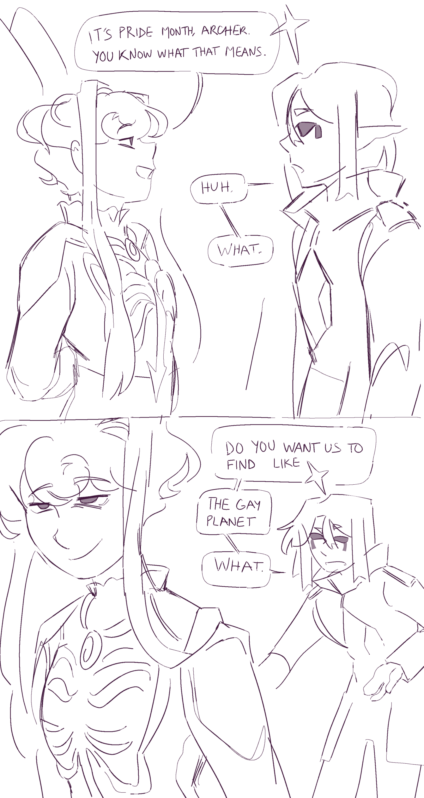

THE PERIL OF POSTING IN MONTHLY BATCHES IS THAT EVERYTHING WILL BE LATE.

creation date: july 10
characters featured: giomi, otis, enzo, [secret for now], juro, archer, lyre
okay. so i sketched this in june when pride was actually happening. then i got busy and forgot about it until july when i re-discovered the sketch and thought, hey, why don't i just finish it off real quick? ehe. it was out-of-date when i drew it (JULY) and now it's even MORE out-of-date in the present (NOVEMBER). GAHHHH
anyhow............. yeup. happy very very late pride from the PTC cast. yayyyyy :D
orange girl in the bottom left hasn't yet been introduced, i'm trying to redesign her before her """"debut"""" but yeah she's been there since 2019 she's an oldieeeeeee. an inventor/wannabe mad scientist but her more modern outfit clashes with the space/fantasy setting in PTC so i've hesitated drawing her for the longest time.
i don't really think about the lgbt identities of my characters when i first create them, but as i develop the story there comes a moment in the process where it's just like... "yeah, this feels right." either way, a few specific identities ended up connecting to and enhancing plotpoints that are very near and dear to me. speaking of...
would you allow me to ramble about some B-plots?
juro
- juro's zealot-like dedication to the divine had its origins from their one-sided situationship with the late goddess, trinity (remember her?????). juro devoted 1000% of everything he had, all for even the slim chance to save her, his muse and creator, who had no interest in even surviving in the first place. fate does as fate does, trinity passes, as is required of her. when juro's chain, which always trailed into the sky snapped in half, she re-bound them herself. if juro believes in fate, then this death was something beautiful, something that was always going to happen no matter what. and if not, then their loved one simply walked to her death and chose not to listen to them.
- it's also why his friendship with esme is so complicated. esme is doing everything she can to figure out the universe's layers of subtlety and uncover why the divine HAVE to do what they do. she fights tooth and nail against the very idea of fate; a mission which juro wishesssssssssss with all their heart their friend will succeed at, but is a mission which juro denies themselves. they can't help, because what if it turns out esme DOES find something? even worse, what if she DOESN'T and ends up getting hurt just like he was so long ago trying to fight that same thing? it's why no matter how much juro respects esme, they can't endorse her, they HAVE to get in the way. juro HAS to protect them both, not realizing while doing this, her actions are......... following an old pattern..........
- to top it all off, trinity isn't even fucking dead btw. she's just a paranoid freak who had a plan and didn't tell ANYONEEE. juro's "visions of the end times" and her "final messages from trinity" are BARELY even a part of the real thing. does ANYONE even RESPECT divine fate??????!??!!?!? is juro being made out as a fool for no damn reason!??!?!??!??!?!??!?!?!??!??!?!?!?!?
- TLDR; THEIR LOVE LIFE FUCKING SUCKS BRO
- then, in trying to find a break from it all, this MIDGET ORANGE BITCH just struts into their life. a midget orange bitch whose demeanor is like tHIS all-the-damn-time btw, and for some reason juro is like. "oh i can't NOT fuck her."
- this shit is SO GD MESSY MAN.
{kind=link}
lyre & archer
they become an item early on in the story. after finding each other in the gutter in the midst of holding onto what believe is the last of their humanity, they manage to find love in each other. yeah, they both have baggage and it's messy as hell (when is anything in PTC not?), but when it's genuine, is their partnership not a testament that they haven't lost themselves at all- they can love and be loved in spite of everything that's happened. they don't have a single kiss scene in the story or any big display of intimacy, but how overpowering and potent a love can be where, even without any physical language, anybody can tell that they belong to each other.
giomi
giomi is aroace :3 this isn't really a plotpoint, moreso this blurb speaks about a part of her character that's implied throughout the narrative. second to enzo, she is the character who i project onto the most and who i find the most relatable. so it's not very surprising that i rather instinctively made her aroace when i also began questioning myself.
giomi's the kind of person to love her friends sooo very intensely, to pine and crave so hard that it hurts her. like she has to stop and write down what she's feeling or else she'll burst- it's badddd. but with such bleeding love to give, none of it will be dedicated to a romantic or sexual partner... just because. the appeal is understood by her, but she can't relate to it at all, actually having trouble comprehending how it could be any more different from a friendship. buuut that confusion is caused literally by the fact that she doesn't feel the things that WOULD differentiate it. it leads to her sensationalizing the very idea of love in the same way she would obsess over a piece of academia that she doesn't understand. she'll ask people pretty invasive questions just to try and mimic their answers and actions to see if it'll do anything for her, buuut it ultimately doesn't. TLDR; hopeless romantic who can't call in love.
canonically, i don't think she'd use the araoace label or any label for that matter. i still think she'd be in a kind of denial phase where she's thinking: "what if i change my mind?" but i think she is very aroace.
unrelated to the drawing, i also think she's... pretty trans-coded? doll who woke up in the middle of nowhere with no memories, had to craft her own body from nothing, chose her own name, and is still chasing a part of that identity that she thinks is "missing"? i mean it's not canon but i think it's fun. :3
otis & enzo
they are NAWT together, they are NOTTT. i just wanna lump them together since what i have to say about them both is pretty short n brief. idk idkkkkk i think it's very comforting to write characters who are entirely confident in their identities, and for otis' case, can be a source of advice or support for other characters. both show their confidence in themselves in very different ways, otis being gay, ace, and an oldhead who knows what he likes but secure in being by himself for the time being. he's quiet and selective with who he lets into his life. and there's enzo who's young, pretty foolish, very casual about it. idkkk im yappingggg
anyhow, that's it.
